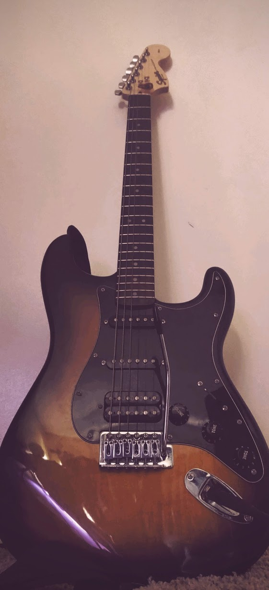
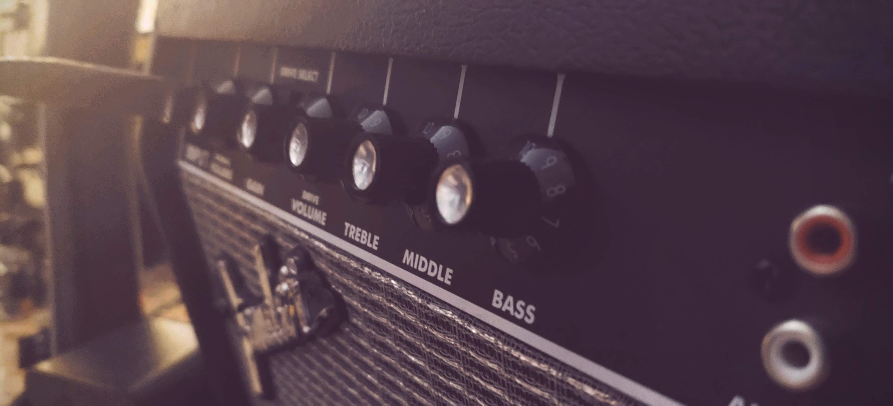
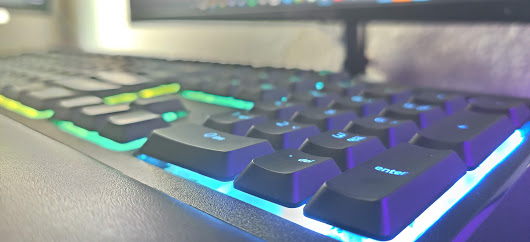
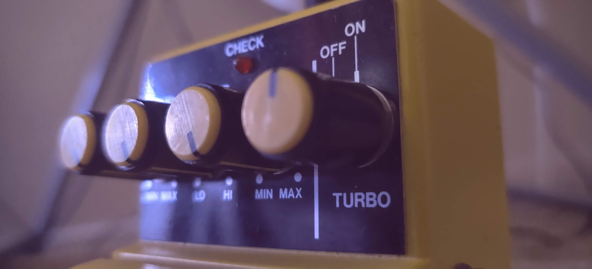
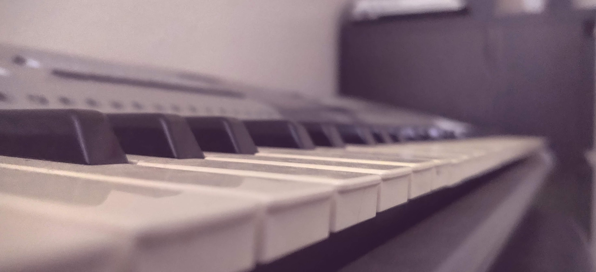
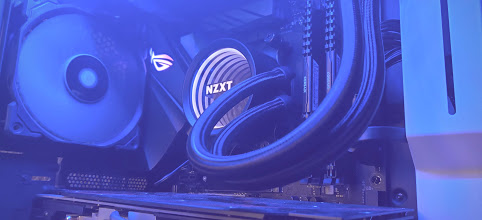
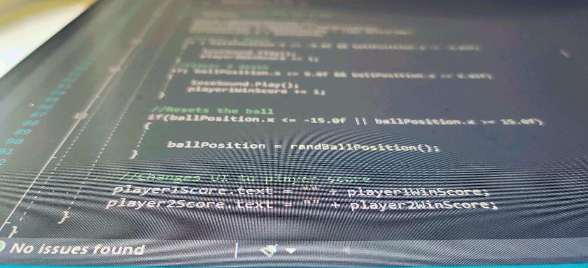

Spanish
Spanish Photo Project

Mi Guitarra Electrica
Compré este guardabarros Stratocaster en Guitar Center hace unos 2-3 meses, tiene un gran valor sentimental porque mi abuelo me lo dio como regalo porque le dije que quería entrar en la industria de la música. También me dio uno de sus viejos amplificadores y un pedal de distorsión que detuvo la producción en la década de 1970.

Mi Amplificador
Conseguí este amplificador de mi abuelo que es de 15 vatios y es un amplificador de válvulas. Los amplificadores de válvulas no son tan populares como antes porque a veces pueden producir mucho ruido. Este viene con distorsión, así que realmente lo disfruto.

Mi Teclado
Conseguí este teclado hace un par de semanas y me gusta mucho por los colores. Tuve que conseguir uno nuevo porque rompí el anterior tratando de cambiar las teclas. No me di cuenta de que en realidad estaban soldados a la placa hasta más tarde.

Pedal De Distorsión
Este pedal de distorsión es único porque no se vende nuevo. Este pedal se fabricó entre los años 60 y 70, pero dejaron de producirse a finales de los 70. No lo venderé por el valor que tiene y por el tono cálido que tiene en comparación con los pedales de metal.

Mi Teclado De Piano
Toco el piano desde que tenía 6 años. Lo he disfrutado porque puedo escuchar la música que me gusta sin usar Internet e incluso puedo agregarle un pequeño giro. Este, en particular, me lo dieron un tiempo porque mi primo no jugaba mucho.

Mi Computadora Construida Por Mí Mismo
Construí esta computadora en diciembre con partes para las que ahorré. Vendí muchas cosas, como mis viejas consolas de juegos y muebles viejos que ya no quería. También conseguí un trabajo debajo de la mesa para mi abuelo, como lavar los autos del vecino. En total fueron unos 800 dólares y creo que valió la pena cada dallar.

Código De Videojuego
Este código es parte de un desafío de juego que configuré con mis amigos. Nuestro desafío era recrear un videojuego clásico icónico, así que no elegí nada más que PONG. El código que está viendo aquí es responsable de reiniciar la pelota después de que alguien tenga una. Publiqué el juego en Itch.io, así que si alguien quiere verlo, pregúntame.